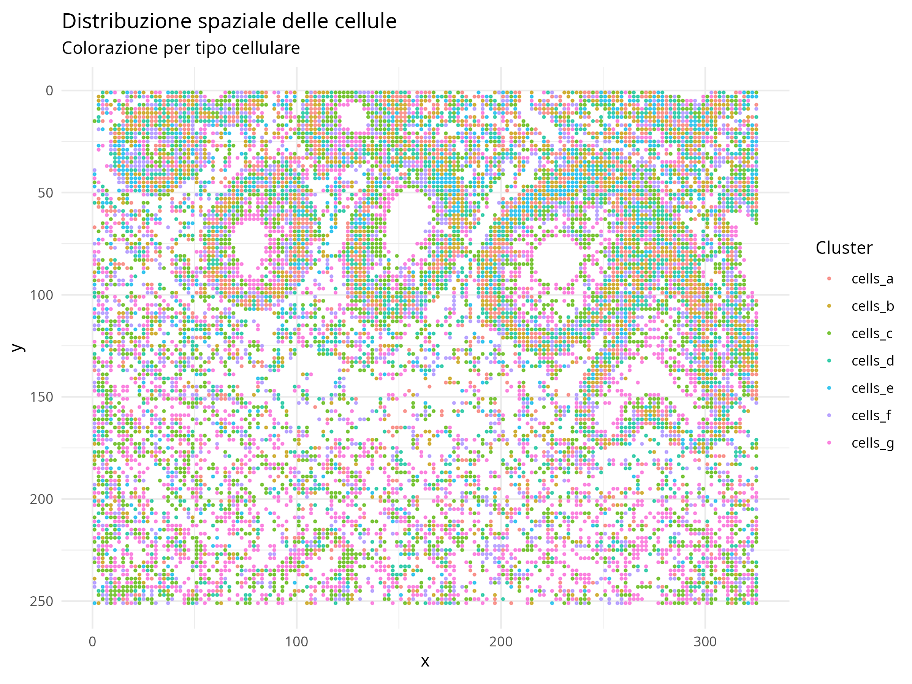
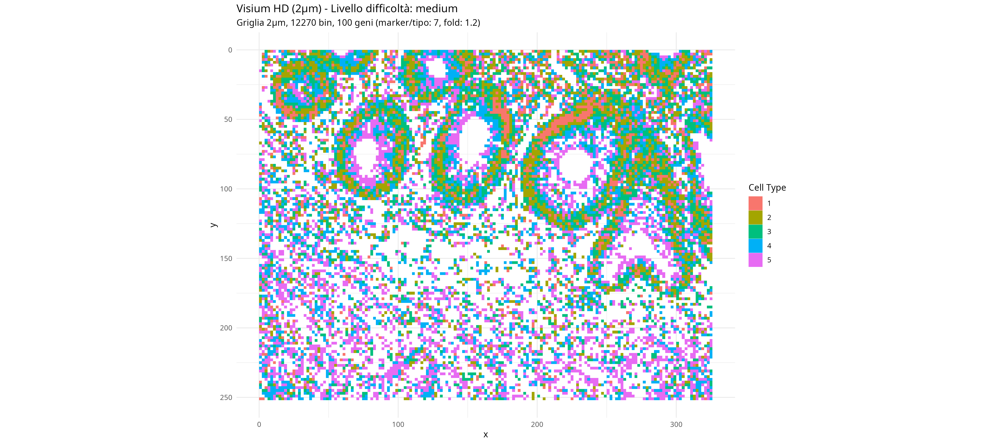
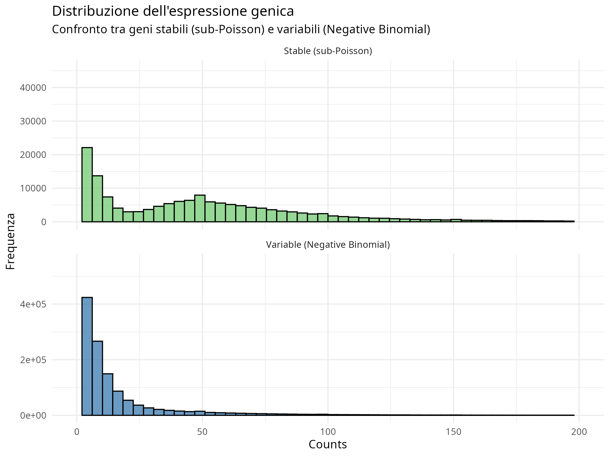
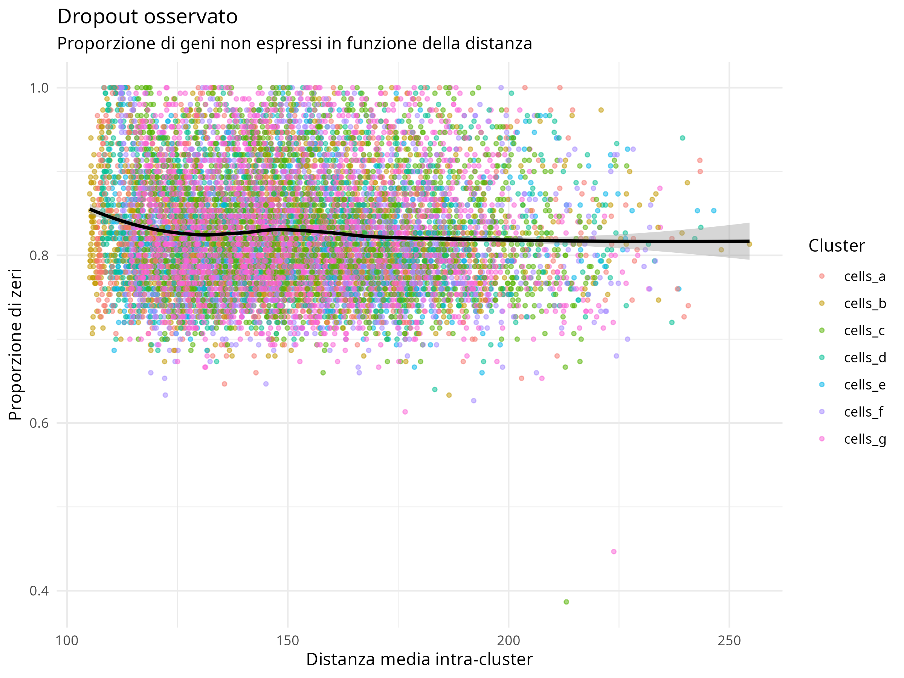
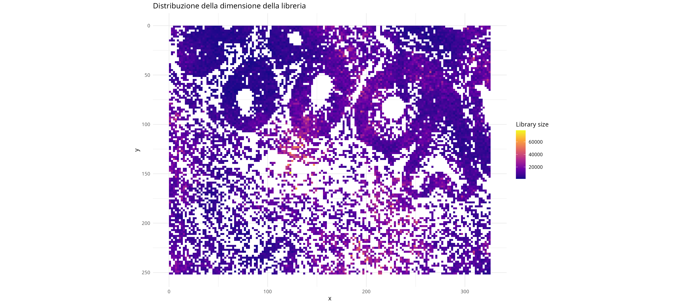
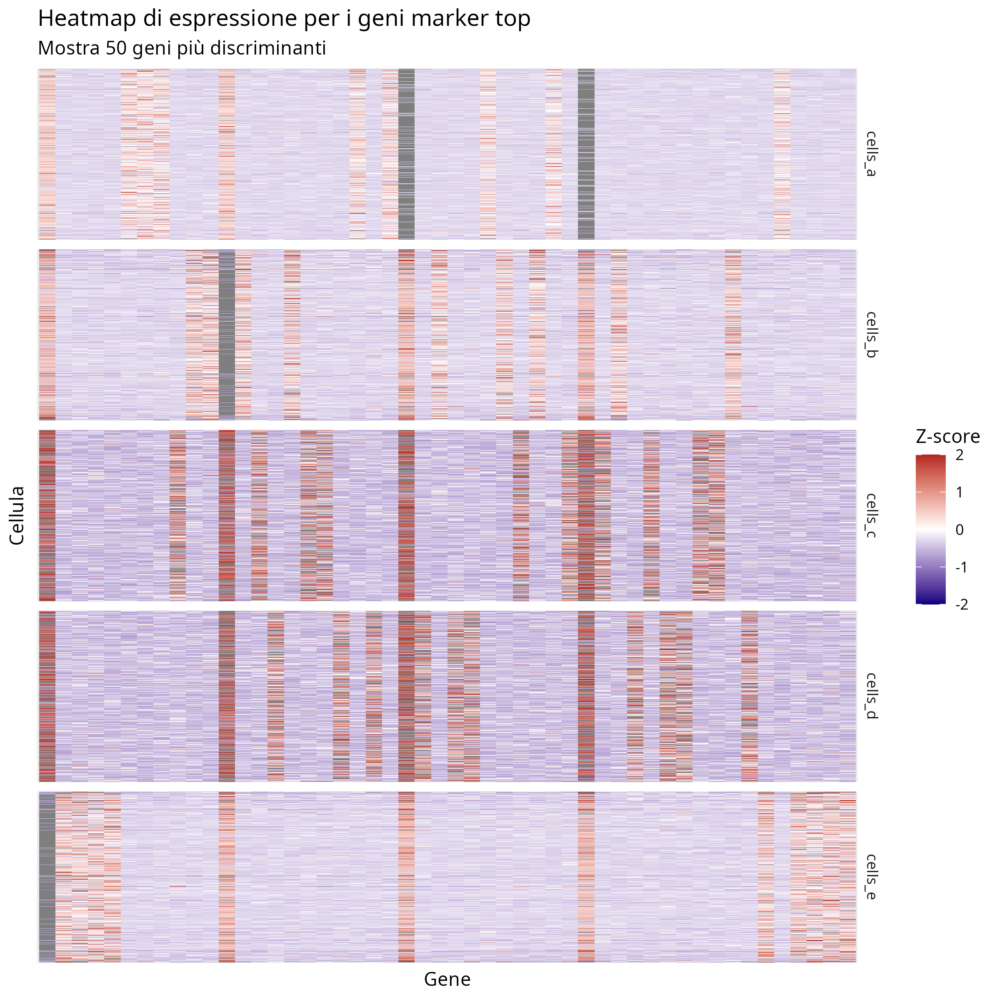

Advanced Spatial Transcriptomics Simulation Framework
Theoretical Foundations and Implementation
Introduction
Spatial transcriptomics technologies measure gene expression while preserving spatial context of cells within tissues. Unlike conventional RNA sequencing, these technologies provide crucial information about spatial arrangement of gene expression patterns.
Technological landscape includes: - In situ hybridization-based methods - In situ sequencing methods - Spatial barcoding methods - Computational integration methods
Need for simulation frameworks: - Experimental ground truth data is prohibitively expensive - Existing simulations have oversimplified statistical properties - Our framework addresses these limitations with sophisticated biological models

Framework Architecture
Our framework provides comprehensive tools for simulating and analyzing spatial transcriptomics data with various statistical properties:
- Modularity: Each component focuses on a specific task
- Flexibility: Parameters can be customized for different scenarios
- Theoretical foundation: Statistical models based on empirical observations
- Benchmarking capabilities: Ground truth for quantitative evaluation
Key Components: - Simulation Core: simulate_spatial_transcriptomics() function - Evaluation Framework: Comprehensive cluster analysis tools - Validation Metrics: Spatial autocorrelation analysis
Visium HD Mode

Dedicated support for simulating Visium HD data at 2μm x 2μm resolution:
Grid-Based Spatial Structure - Regular grid of spots - Deterministic mapping of image regions - Precise tissue structure modeling
Advanced Spatial Correlation Models - Gaussian Random Fields (GRF) - Conditional Autoregressive Models (CAR) - Gradient-Based Region Transitions
Theoretical Foundations
Count Distribution Models
The core challenge in transcriptomics simulation is accurately modeling the distribution of gene expression counts:
Negative Binomial Distribution - Models overdispersion (variance > mean) - Flexible variance structure via dispersion parameter - Captures stochastic bursting in transcription
Sub-Poisson Model - For constitutively expressed genes - Shows lower-than-Poisson variance - Models tightly regulated housekeeping genes
Spatial Correlation Implementation
Our framework implements sophisticated spatial correlation models:
Gaussian Process - Exponential covariance function - Controls correlation length scale - Models diffusion-like molecular gradients
Conditional Autoregressive Model - Ideal for grid-based data - Models neighborhood dependencies - Suited for high-resolution simulations

Technical Artifact Models
Spatially-varying Dropout

Expression-dependent Dropout

Library Size Modeling

The framework models realistic technical artifacts:
- Dropout combines spatial effects with expression-level dependency
- Dispersion varies at tissue boundaries
- Library size follows log-normal distribution with spatial correlation
Customizable Difficulty Levels
Our framework allows simulating data with varying levels of analytical challenge through pre-defined difficulty tiers:
- 10 marker genes per cell type
- +2.0 log-fold expression
- No marker overlap
- Low spatial noise
- Minimal technical artifacts
- 7 marker genes per cell type
- +1.2 log-fold expression
- 20% marker overlap
- Moderate spatial noise
- Moderate technical artifacts
- 5 marker genes per cell type
- +0.8 log-fold expression
- 40% marker overlap
- Strong spatial noise
- Extreme technical artifacts
For advanced customization, the framework provides extensive parameter options for fine-grained control.
Validation and Results
Spatial Autocorrelation Analysis
The framework calculates Moran’s I statistic to quantify spatial autocorrelation:
\[I = \frac{n}{S_0} \frac{\sum_i \sum_j w_{ij} (x_i - \bar{x}) (x_j - \bar{x})}{\sum_i (x_i - \bar{x})^2}\]
This provides a standardized measure of spatial structure that can be: - Compared between simulated and real datasets - Used to validate spatial correlation models - Applied to benchmark spatial analysis methods

Key Contributions and Future Directions
Key Contributions
- Realistic statistical properties matching real data
- Grid-based simulation for Visium HD
- Advanced spatial correlation models using GRF and CAR
- Enhanced gradient-based transitions
- Gene co-expression modules
- Cell-type specific effects
- Expression-dependent dropout modeling
- Library size variation with spatial dependencies
- Optimized vectorized implementation
- Comprehensive evaluation tools
Future Extensions
- Dynamic temporal components
- Ligand-receptor interaction modeling
- Multi-scale spatial patterns
- Automated parameter inference
- Multi-omic integration
- Context-aware simulation
Applications - Method development for spatial transcriptomics - Benchmarking of clustering algorithms - Educational use for teaching concepts - Hypothesis testing for experimental design - Technical artifact correction development
Contact Information
For more information, code access, and collaboration opportunities:
- Repository: github.com/lucavd/2025.geo_spatialtrans
- Email: geo.spatialtrans@unipd.it
- Website: www.geospatialtrans.unipd.it